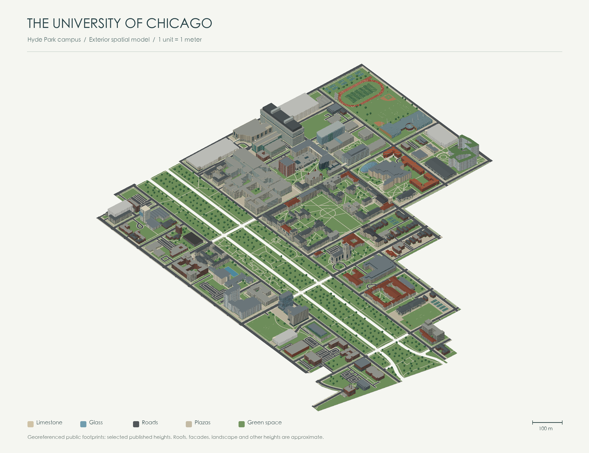

The model, rendering engine and preview are embedded in this HTML. Open it directly in a browser without an internet connection. WebGL 2 is required for interaction.
Scale: 1 unit = 1 meter. Footprints are georeferenced public map data. Selected landmark heights come from published university or project sources. Other heights, roofs, facade openings, trees and street widths are approximate. Ground is flattened to relative Z = 0. This is an independently made exterior study model, not an official BIM or a certified survey.
English is the default; devices with Chinese in their language preferences open in Chinese. A manual language choice is remembered when browser storage is available. Chinese building names are descriptive translations.
Sources: University map · University architecture · Chicago building data · © OpenStreetMap contributors / ODbL.
JavaScript is required for the interactive 3D viewer. The campus preview and building directory are available below. Download 3DS · Download Rhino model.